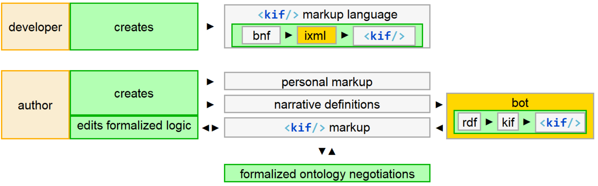

Humans are not ideally set up to understand logic; they are ideally set up to understand stories. | ||
| --Roger C. Schank, cognitive scientist | ||
An obvious next step is to connect the form control to a SUMO repository and add a lookup/ query interface. The level of effort appears reasonable.
More thought needs to go into a more challenging issue, authoring fully-formalized semantics. Spelling KIF is one thing. Spelling out formal logic in KIF is another.
Semantic markup can simplify knowledge transfer by making implicit organizing concepts more explicit. This is especially useful during learning, before a new conceptual framework's language and logic have been fully-internalized.
Expressing KIF concepts more explicitly through markup is expected to help it make sense in more behavioral contexts:
For individuals, faster comprehension and productivity, especially when style variations can be applied to help differentiate concepts
For the bots, more tool options. XSLT and XPath, by themselves, dramatically expand the software development options.
In his Standard Upper Ontology Knowledge Interchange Format document, Adam describes SUO-KIF using BNF syntax:
Figure 35. SUO-KIF definition
upper ::= A | B | C | D | E | F | G | H | I | J | K | L | M |
N | O | P | Q | R | S | T | U | V | W | X | Y | Z
lower ::= a | b | c | d | e | f | g | h | i | j | k | l | m |
n | o | p | q | r | s | t | u | v | w | x | y | z
digit ::= 0 | 1 | 2 | 3 | 4 | 5 | 6 | 7 | 8 | 9
special ::= ! | $ | % | & | * | + | - | . | / | < | = | > | ? |
@ | _ | ~ |
white ::= space | tab | return | linefeed | page
initialchar ::= upper | lower
wordchar ::= upper | lower | digit | - | _ | special
character ::= upper | lower | digit | special | white
word ::= initialchar wordchar*
string ::= "character*"
variable ::= ?word | @word
number ::= [-] digit+ [. digit+] [exponent]
exponent ::= e [-] digit+
term ::= variable | word | string | funterm | number | sentence
relword ::= initialchar wordchar*
funword ::= initialchar wordchar*
funterm ::= (funword term+) | (funword sentence+)
sentence ::= word | equation | inequality |
relsent | logsent | quantsent
equation ::= (= term term)
relsent ::= (relword term+) | (relword sentence+)
logsent ::= (not sentence) |
(and sentence+) |
(or sentence+) |
(=> sentence sentence) |
(<=> sentence sentence)
quantsent ::= (forall (variable+) sentence) |
(exists (variable+) sentence)
ixml was used to transform KIF to <kif/>. The most significant finding was that the definition appears to include a couple of unnamed layers that deserve clarification.
Integrations with other automated systems have been explored. OntoInsights focuses on the value propositions associated with storytelling and deep narrative analysis. It generates RDF fragments that can be translated into KIF.
Figure 36. From semi-formalized markup languages to fully-formalized ontologies
|  |
Every time I look in one of those fully-formalized thingies, it never agrees with the way I think. | ||
| --Test subject | ||